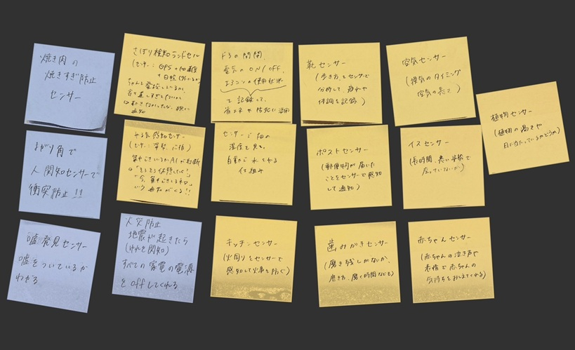

センサーのデータをサーバーに送ってデータを蓄積する
IoT(データ保存)で何ができそうか？どのようなデータを保存していくと価値あるものになるか？グループワークした内容

・エアコンのつけすぎ(温度感知センサー)を読み取って、自動的に室内を快適な温度にしてくれるもの
・郵便物が届いたことを（重量感知センサー，距離感知センサー）センサーで感知して通知してくれるもの
・火周りをセンサー（温度感知センサー）で感知して火事を防ぐものなどがでた
センサー実験の動画
⬇️ 明るさセンサーで明るさを感知し、暗い時はLEDを明るくさせる
動画のリンクはこちら！